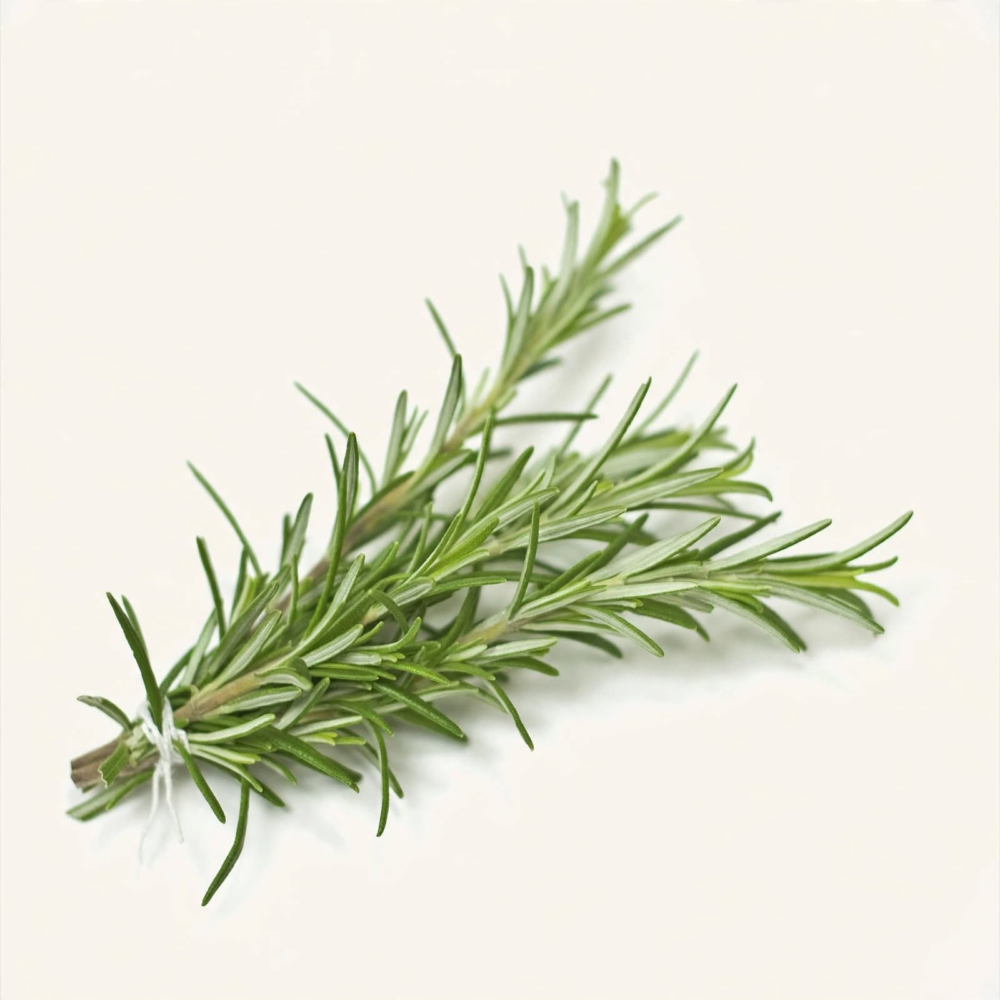
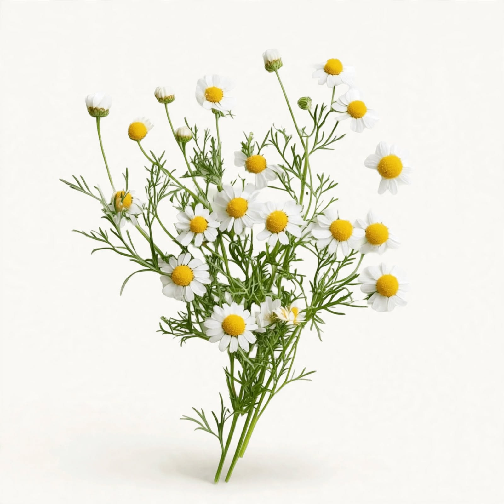
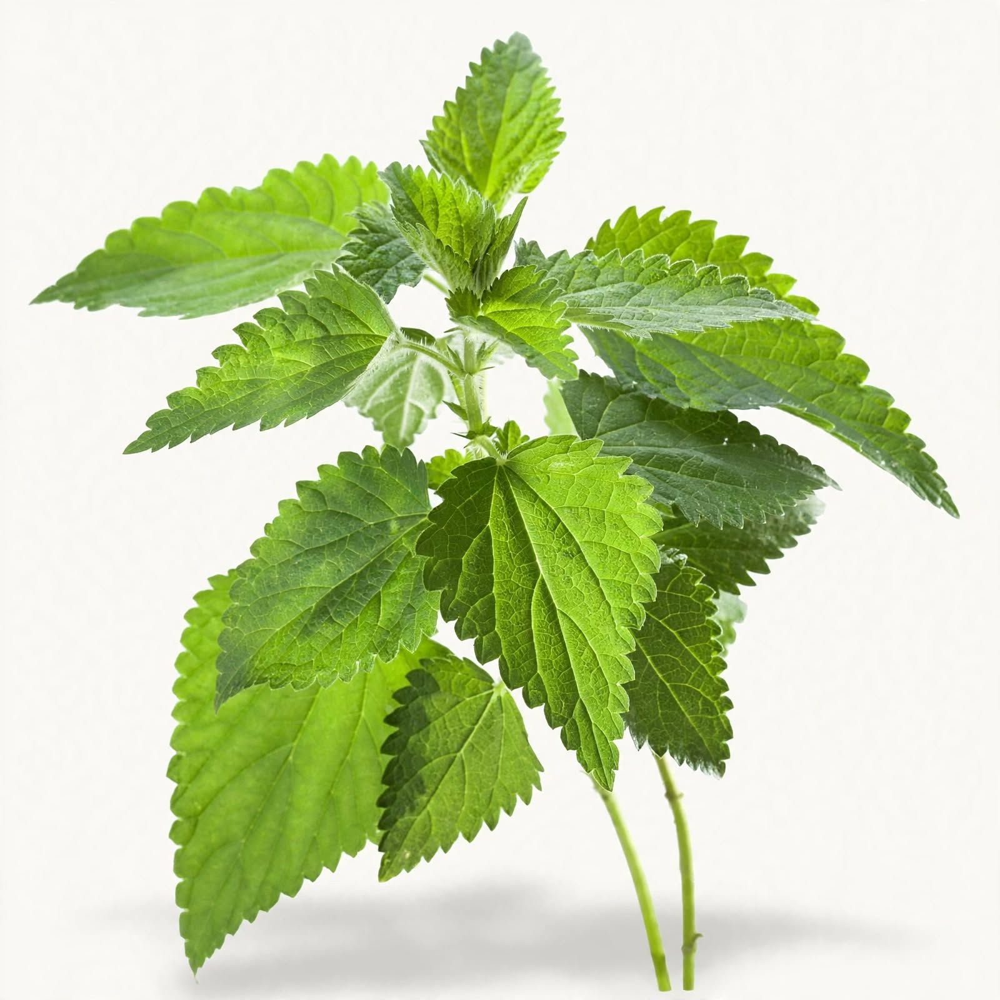
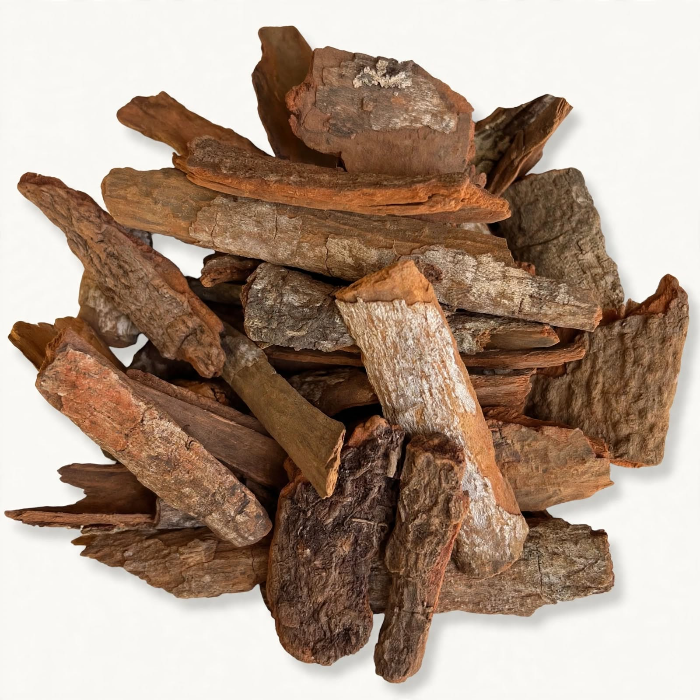
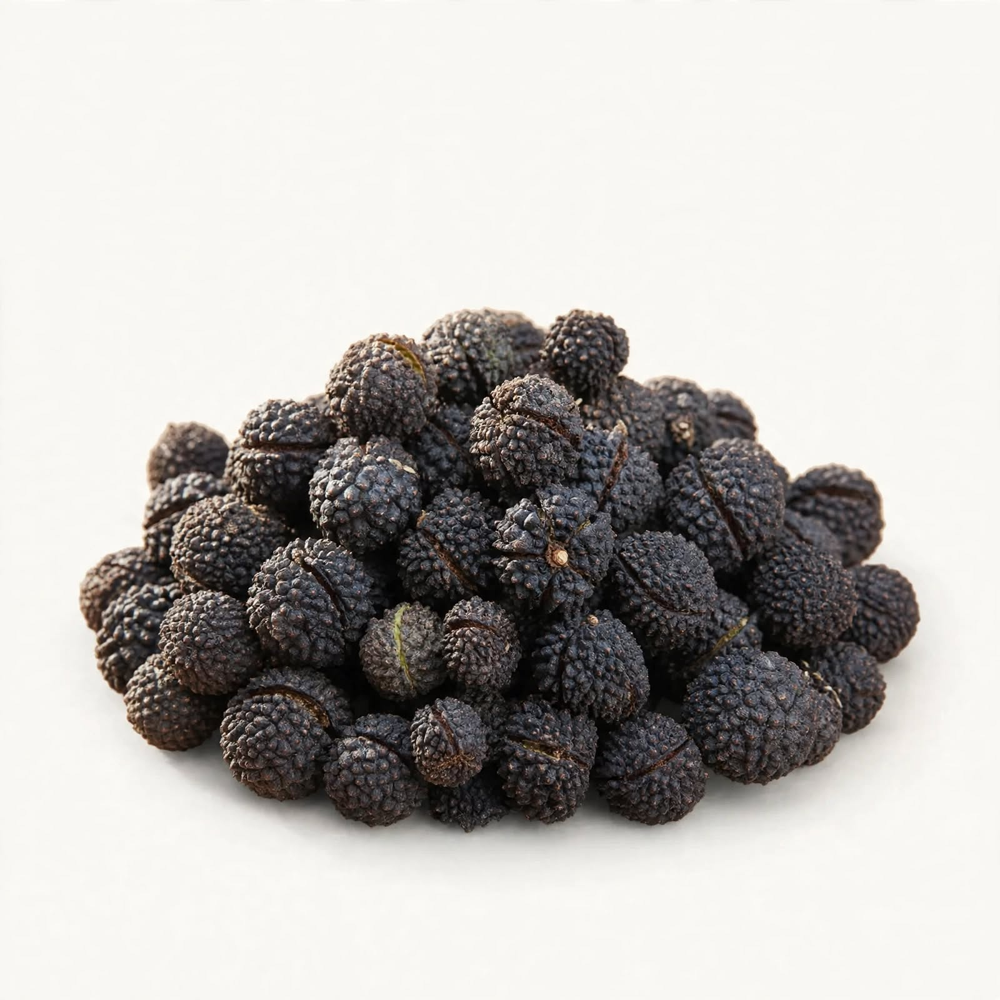
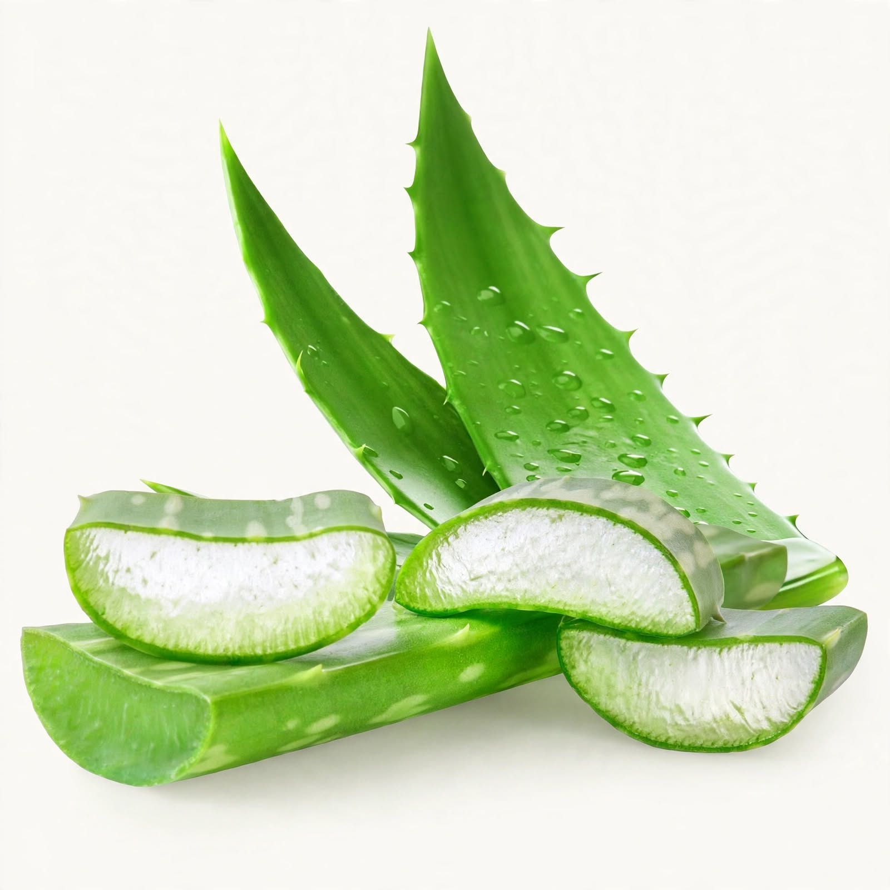

Elaboración artesanal
Cada producto es elaborado con dedicación, cuidando las cantidades, los procesos y los detalles que hacen parte de nuestra formulación.
«El poder de lo natural en tu cabello»
Somos un emprendimiento dedicado a la elaboración artesanal de productos para el cuidado capilar, inspirados en el conocimiento botánico y en el valor de los ingredientes de origen natural.
Creemos que cuidar el cabello va más allá de utilizar un producto. Se trata de conocer sus necesidades, entender sus cambios y encontrar una rutina que le permita lucir y sentirse mejor.
Aromantrika nació de un interés por la naturaleza, las plantas y las preparaciones artesanales.
Junto a mi mamá comenzamos a elaborar un champú para uso familiar, recuperando una receta que su abuela preparaba para ella y sus hermanas, aprovechando las propiedades de ingredientes como la sábila.
Lo que comenzó como una preparación para nuestro hogar fue creciendo poco a poco, gracias a las personas que conocieron, probaron y confiaron en lo que hacíamos.
En medio de ese camino atravesé una de las experiencias más desafiantes de mi vida: el cáncer y la pérdida del cabello durante el tratamiento. Vivir ese proceso me permitió comprender desde otra perspectiva lo que significa enfrentar cambios en el cabello y la importancia que tiene su cuidado en nuestra vida cotidiana.
Esa experiencia fortaleció el propósito que hoy nos mueve: elaborar productos capilares artesanalmente, recuperar el valor de los ingredientes de origen natural y acompañar a las personas en el cuidado de su cabello.
Hoy, Aromantrika sigue creciendo con la misma esencia con la que comenzó: tradición familiar, dedicación, aprendizaje constante y el deseo genuino de ayudar a otros a cuidar su cabello.
Creemos en el valor de los ingredientes que nos ofrece la naturaleza y en la importancia de utilizarlos de manera consciente.
Por eso, incorporamos ingredientes botánicos seleccionados por sus características y propiedades cosméticas.
Cada ingrediente tiene una función y cada formulación responde a una intención: ofrecer alternativas para las diferentes necesidades del cabello y del cuero cabelludo.

Romero
Manzanilla
Ortiga
Quina
Guásimo
SábilaCada producto es elaborado con dedicación, cuidando las cantidades, los procesos y los detalles que hacen parte de nuestra formulación.
Apostamos por incorporar ingredientes botánicos y componentes de origen natural en nuestras formulaciones, buscando un equilibrio entre naturaleza, funcionalidad y cuidado capilar.
Desarrollamos alternativas para mujeres, hombres y niños a partir de los 3 años, porque creemos que el cuidado del cabello puede acompañarnos en cada etapa de la vida.
No queremos que simplemente compres un producto. Queremos ayudarte a entender las necesidades de tu cabello, orientarte en la elección de una rutina y acompañarte durante su proceso de cuidado.
En Aromantrika trabajamos con responsabilidad, dedicación y respeto por nuestros clientes, los animales y el entorno.
Somos una marca libre de crueldad animal y creemos que la confianza se construye con transparencia, atención cercana y compromiso con cada persona que elige nuestros productos.
Descubre nuestras alternativas de cuidado capilar y encuentra los productos que acompañan las necesidades de tu cabello.